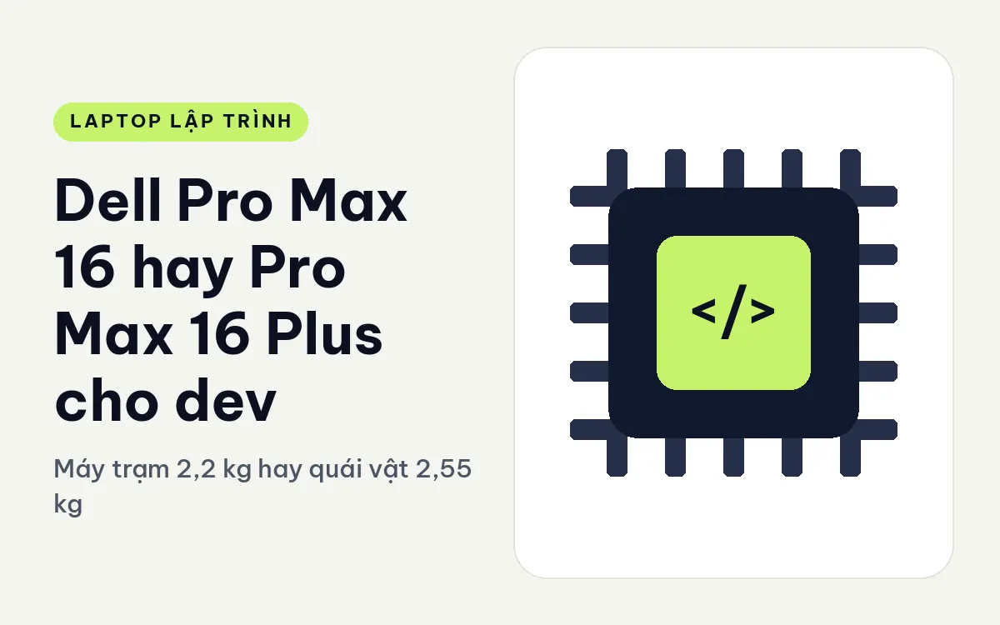
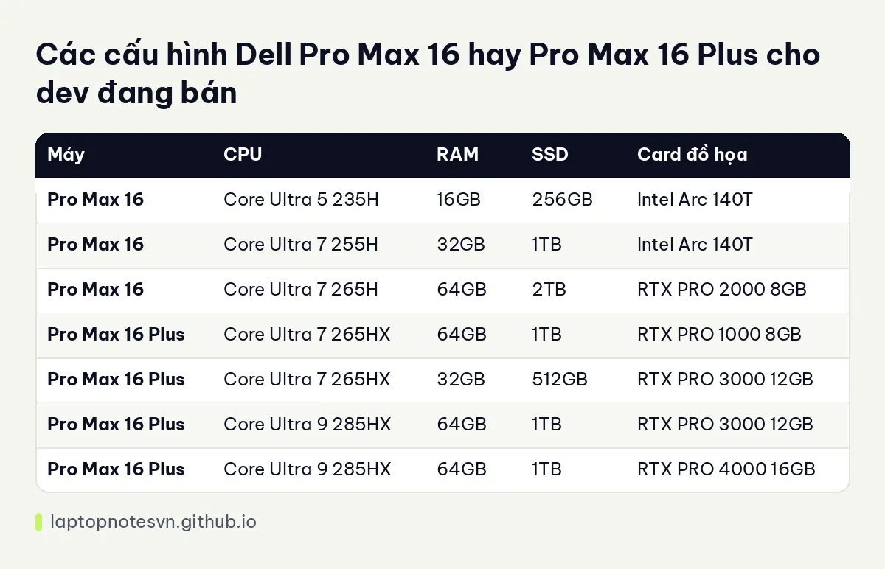

Dell Pro Max 16 hay Pro Max 16 Plus cho dev - Máy trạm 2,2 kg hay quái vật 2,55 kg

Hai máy 16 inch trong dòng Pro Max nhìn bề ngoài khá giống nhau, nhưng một chiếc thuộc nhóm máy trạm thông thường, chiếc còn lại là bản Plus với chip HX và card đồ họa mạnh hơn hẳn. Câu hỏi của dev thường là: có đáng thêm 350 gam trên lưng để lấy sức mạnh đó không. Bài này đi qua từng chỗ khác nhau để bạn tự trả lời.
Một bên là Dell Pro Max 16 MC16250.
Bên kia là Dell Pro Max 16 Plus MB16250.
Cảm giác cầm và độ bền của hai máy
Pro Max 16 nặng khởi điểm 2,2 kg, kích thước 358 x 256 mm, pin 96Wh. Bản Plus nặng 2,55 kg, kích thước 360 x 258,6 x 30,9 mm, cũng pin 96Wh. Cả hai đều là máy nên để trên bàn, mang đi thì cần ba lô chắc chắn.
Về cổng, máy thường có 2 Thunderbolt 4, HDMI, RJ45 và USB 3.2. Bản Plus có 2 Thunderbolt 5 và 1 Thunderbolt 4, 2 cổng USB-A, HDMI, RJ45 tốc độ 2.5GbE và khe thẻ SD. Bản Plus nhiều cổng hơn, ít phải mua hub.
Phần nâng cấp cũng khác. Máy thường dùng RAM DDR5 và SSD, cả hai thay được. Bản Plus có RAM DDR5 với nắp kỹ thuật ở đáy, giúp thợ mở máy thay linh kiện nhanh hơn. Với dev, đây là điểm nên nghĩ tới khi cân nhắc dùng máy lâu dài ba đến năm năm.
Bản nào đủ sức cho việc code hằng ngày
| Máy | CPU | RAM | SSD | Card đồ họa |
|---|---|---|---|---|
| Pro Max 16 | Core Ultra 5 235H | 16GB | 256GB | Intel Arc 140T |
| Pro Max 16 | Core Ultra 7 255H | 32GB | 1TB | Intel Arc 140T |
| Pro Max 16 | Core Ultra 7 265H | 64GB | 2TB | RTX PRO 2000 8GB |
| Pro Max 16 Plus | Core Ultra 7 265HX | 64GB | 1TB | RTX PRO 1000 8GB |
| Pro Max 16 Plus | Core Ultra 7 265HX | 32GB | 512GB | RTX PRO 3000 12GB |
| Pro Max 16 Plus | Core Ultra 9 285HX | 64GB | 1TB | RTX PRO 3000 12GB |
| Pro Max 16 Plus | Core Ultra 9 285HX | 64GB | 1TB | RTX PRO 4000 16GB |
Máy thường có hai bản dùng card tích hợp, nghĩa là giá thấp nhưng bạn không có GPU rời. Chỉ bản 265H 64GB mới có RTX PRO 2000. Máy Plus thì bản nào cũng có card rời, từ RTX PRO 1000 lên RTX PRO 4000 với 16GB VRAM. Với dev làm máy học cục bộ, VRAM 16GB mở ra khả năng chạy mô hình lớn hơn nhiều so với 8GB.

Tên chip cũng cho thấy khác biệt. Dòng H trên máy thường hướng tới hiệu năng cân bằng. Dòng HX trên bản Plus là chip dành cho máy trạm hạng nặng, tiêu thụ điện cao hơn nhưng làm tốt việc biên dịch quy mô lớn và dựng hình. Cách chọn dung lượng RAM theo tải việc được viết ở bài RAM cho lập trình viên.
Mỗi máy hợp với nhóm dev nào
- Backend, web, Docker: máy thường bản 32GB đã dư dùng, không cần Plus.
- Biên dịch C++ hoặc Rust cho dự án lớn: chip HX của bản Plus rút ngắn thời gian build.
- Chạy mô hình ngôn ngữ cục bộ, CUDA: nên chọn Plus với RTX PRO 3000 hoặc 4000 để có VRAM rộng.
- Làm game engine, dựng 3D: Plus mới đủ lực, máy thường chỉ nên dùng khi bạn ít làm phần đồ họa nặng.
Nhiệt, tiếng ồn và chuyện đặt máy ở đâu
Máy 16 inch trở lên có chỗ để quạt lớn, nhưng chip HX và card RTX PRO 4000 cũng tiêu thụ điện đáng kể. Khi bạn chạy tác vụ nặng, hệ thống tản nhiệt của bản Plus sẽ làm việc nhiều hơn, tiếng quạt có thể nghe rõ trong phòng yên tĩnh. Máy thường với card tích hợp hầu như chạy êm vì phần lớn công việc không đẩy máy tới giới hạn.
Với dev làm việc ở nhà, điều này không quan trọng lắm. Với dev hay ngồi quán hay họp trực tuyến nhiều, máy ít ồn hơn là một lợi thế thực tế. Ngoài ra, cả hai máy đều dùng pin 96Wh, nhưng pin lớn không đồng nghĩa dùng được lâu khi bạn chạy GPU, nên hãy coi nó là nguồn dự phòng khi mất điện chứ đừng dựa vào nó để đi cả ngày.
Một lời khuyên về phần cứng chung: nếu bạn mua bản RAM 16GB của máy thường, hãy nhớ rằng nó thay được, nên có thể nâng cấp sau. Còn nếu mua Plus, bạn nên xác nhận cấu hình RAM ngay từ đầu vì các bản 64GB đã có sẵn, không cần chờ nâng cấp.
Lời khuyên chọn máy theo từng trường hợp
Chọn Pro Max 16 nếu bạn cần máy 16 inch gọn hơn, sức mạnh ở mức đủ dùng và muốn tự thay RAM, SSD. Bản 32GB hoặc 64GB đều làm tốt Docker và nhiều tab IDE. Đánh giá riêng của máy này nằm ở trang Pro Max 16 cho lập trình.
Chọn Pro Max 16 Plus nếu việc của bạn cần GPU rời mạnh, chip HX, nhiều cổng nhanh và chấp nhận mang thêm hơn 300 gam. Nó như một cái trạm làm việc thu nhỏ, hợp ai ngồi bàn là chính.
Hãy hỏi mình một câu: trong tuần làm việc, bao nhiêu giờ máy chạy hết công suất liên tục? Nếu chỉ vài giờ, máy thường ổn. Nếu máy cày gần như cả ngày, Plus có hệ tản nhiệt và nguồn điện phù hợp hơn.
Đăng ngày 09/11/2026